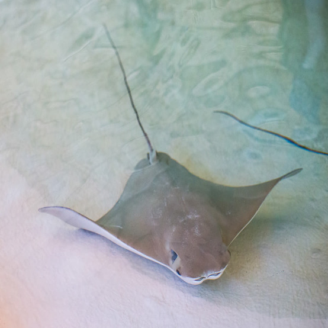

Cownose Ray
Rhinoptera bonasus

| Basic Information |
|---|
| Common Name(s): Cownose Ray 1; American Cownose Ray 2 |
| Scientific Name: Rhinoptera bonasus 1 |
| Conservation Status: Vulnerable 2 |
| Classification | ||
|---|---|---|
| Kingdom: Animalia 1 | Phylum: Chordata 1 | Subphylum: Vertebrata 1 |
| Class: Chondrichthyes 1 | Subclass: Elasmobranchii 1 | Order: Myliobatiformes 1 |
| Family: Rhinopteridae 1 | Genus: Rhinoptera 1 | Species: Rhinoptera bonasus 1 |
Physical Profile
Size Range
Cownose rays are about 14 inches (36 cm) across at birth and can reach roughly 43 inches (110 cm) in disc width as adults. 2 3 They can weigh up to about 50 pounds (22 kg). 4
Identification Markings
Cownose rays have a brown to golden-brown upper body and a white or yellowish-white underside. 3 Their broad, triangular pectoral fins resemble wings, and their snout has two rounded lobes that give it a cow-like appearance. 3 They also have a long, whip-like tail with one or two serrated, mildly venomous spines. 3
Habitat & Geography
Habitats
Cownose rays live in marine and brackish water, including shallow coastal waters, bays, estuaries, and the open ocean. 3 They are often found near sandy or muddy bottoms but also swim near the surface. 3
Distribution
Cownose rays occur in the western Atlantic Ocean, ranging from southern New England through Florida and the Gulf of Mexico and south through Trinidad, Venezuela, Brazil, Uruguay, and northern Argentina. 2
Distribution Map

Ecology & Behavior
Feeding and Diet
Cownose rays mainly eat mollusks, crustaceans, and other bottom-dwelling invertebrates, along with some small fish. 3 Their flat, plate-like teeth are adapted for crushing hard shells. 3 They can detect buried prey and disturb sand or sediment with their fins and water movement to uncover food.3
Behaviors and Adaptations
Cownose rays are highly social and can form schools containing hundreds or thousands of individuals. 3 4 They make long seasonal migrations and often swim near the surface. 3 Their crushing teeth help them feed on hard-shelled prey, while their tail spine provides a form of defense. 3
Life History Cycle & Breeding Behaviors
Cownose rays give birth to live young and normally produce only one pup per pregnancy. 4 5 In Chesapeake Bay, adults arrive in spring, give birth around June, mate around July, and migrate away by fall. 4 Gestation is generally estimated at about \11–12 months. 5
Predators
Known predators of cownose rays include cobia, sandbar sharks, and bull sharks. 3